Hikâye Başlığı
Hikâye alt başlığı veya epigraf
Kültürel & Tarihsel Bağlam
Tarihsel ve folklorik analiz...
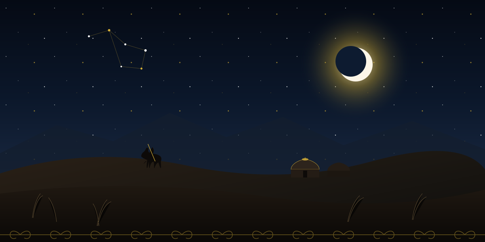
Uçsuz bucaksız Avrasya bozkırlarının rüzgârında yankılanan kadim destanlar, Kök Tengri’nin sonsuz göğü altında doğan mitler ve binlerce yıldır kopuz ezgileriyle dilden dile aktarılan hikâyelerin büyüleyici dünyasına adım atın.
Yazının kâğıda değil, rüzgâra, kalplere ve kopuzun tellerine kazındığı bir medeniyetin yaşayan sözlü mirası.
Kazak bozkırlarında söz, yalnızca bir iletişim aracı değil; bir milletin hafızasını, töresini, ahlak yasalarını ve kozmik evren tasavvurunu yüzyıllar boyunca geleceğe taşıyan kutsal bir emanettir. Şehir surlarının ve taş binaların bulunmadığı göçebe bozkır coğrafyasında kütüphaneler, jıravlar (bilge ozanlar) ve akınların (doğaçlama söz ustaları) hafızasında inşa edilmiştir.
Akşamları göçebe çadırı olan kiyiz üyün şanırağı altında yakılan ateşin etrafında toplanan topluluk, kopuz veya dombıra ezgileri eşliğinde geçmiş kahramanların cesaretini, doğanın kutsal döngüsünü ve yaşamın sırlarını dinlerdi. Bu gelenek, Kazak kültürünün kolektif vicdanını ve kimliğini şekillendirmiştir.
“Bozkırın enginliğinde yankılanan bilge bir söz, rüzgârın taşıdığı tohum gibi hafızalara kök salar ve asırları aşarak bugüne ulaşır.”
Kazak folkloru; masallardan (ertegiler), kahramanlık destanlarından (batırlar jırı), felsefi öğütlerden (tolğavlar) ve mizahi latifelerden oluşan zengin bir türler mozaiğidir. Her anlatı türü, bozkır insanının tabiatla kurduğu uyumu, adalete duyduğu sarsılmaz inancı ve özgürlük tutkusunu yansıtır.
Korkyt Ata’nın ölümsüzlük arayışından Er Töstik’in yeraltı serüvenine, Aldar Köse’nin zekâsından Alpamıs’ın kahramanlığına uzanan altı kadim anlatı.
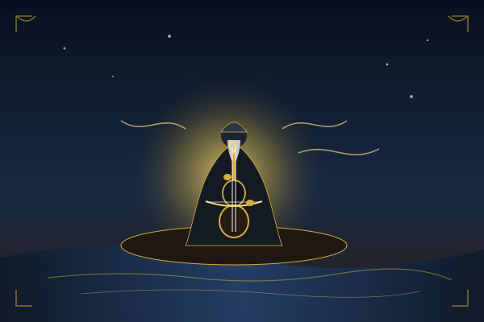
Efsane & MüzikÖlümün kaçınılmazlığı karşısında bozkırı adım adım gezen, sonunda ilk kopuzu yaratarak müziğin ebedi tınısıyla ölüme meydan okuyan bilge ozan.
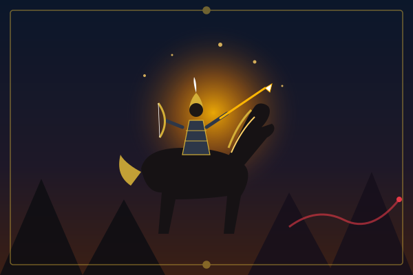
Kahramanlık MasalıDeve göğüs kemiğinden mucizevi bir şekilde dünyaya gelen, sadık atı Şalqūyrıq ile yerin yedi kat altına inip karanlık güçleri dize getiren cesur bahadır.
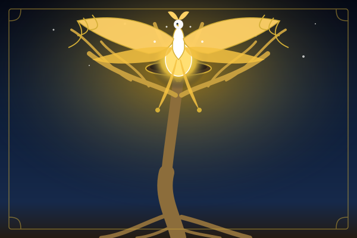
Mitoloji & KozmolojiKökleri yeraltını, gövdesi yeri, dalları ise göğü tutan kozmik kavak ağacı ile onun doruğunda her yıl güneşi yumurtlayan efsanevi zümrüdüanka.
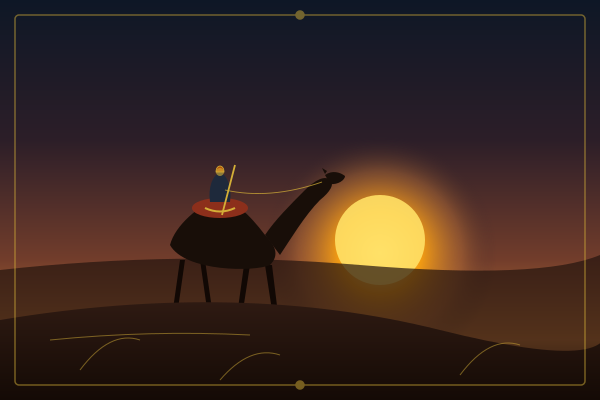
Felsefi EfsaneHalkının kederini sırtlanan 15. yüzyıl düşünürü, rüzgâr ayaklı devesi Jelmaya ile kurdun kuzuyla kardeşçe yaşadığı vaat edilmiş cennet diyarı arar.
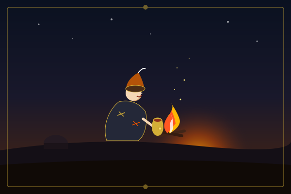
Mizahi LatifeTek bir sakalı bile olmayan ama keskin aklıyla kibirli beyleri, zalim hanları ve cimri zenginleri şaşırtarak yoksullara yardım eden halk kahramanı.
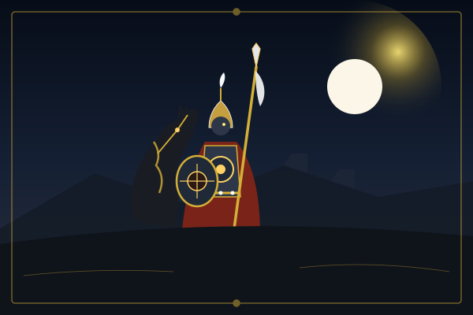
Kahramanlık DestanıHalkının bağımsızlığı ve sevdiği Gülbarşın için yıllarca zindanda direnip sadık savaş atı Bayşubar’ın yardımıyla yurduna adaleti geri getiren ulu bahadır.
Kazak mitolojisinde ve gündelik hayatında derin anlamlar taşıyan kutsal varlıklar, ezgiler ve göçebe yaşamının köklü simgeleri.
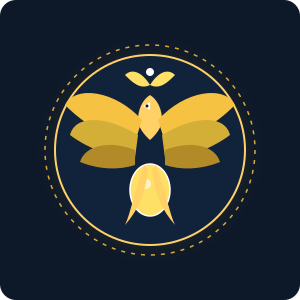
Güneşin doğuşunu, yenilenmeyi ve göksel koruyuculuğu simgeleyen ulu efsane kuşu. Her yıl hayat ağacının tepesine altın bir yumurta bırakır; bu yumurta güneşi temsil eder.
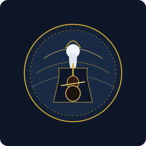
Tüm Türk-Bozkır dünyasının ulu ozanı, ilk kopuzun mucidi ve ölüm fikrini sanatın ebediyetiyle aşan büyük bilge. Hem tarihi bir 9-10. yüzyıl şahsiyeti hem de mitolojik bir velidir.
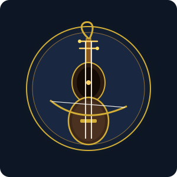
Tek parça akçaağaç veya huş ağacından oyulan, alt çanağı deve derisiyle kaplanan, telleri ve yayı at kılından yapılan kadim yaylı çalgı. Çıkardığı ses bozkır rüzgârını, kurt ulumasını ve kuğu feryadını andırır.
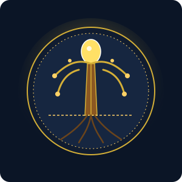
Kökleri yerin altındaki karanlık sulara (yeraltı âlemi), gövdesi insanların yaşadığı orta dünyaya, dalları ise Kök Tengri’nin gök kubbesine uzanan dev kavak ağacı.
Kazak keçe çadırının (kiyiz üy) tepesinde dumanın çıktığı, güneş ışığının ve yıldızların içeri süzüldüğü kemerli ahşap çember. Ailenin ve ocağın tüttüğü en mukaddes parçadır.
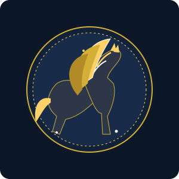
Sadece kahramanların binebildiği, rüzgâr gibi esen, görünmez kanatlarıyla dağları ve gölleri aşabilen, sahibini tehlikelere karşı uyaran konuşan kanatlı gök atı.
Bozkırın hikâyelerini, destan kahramanlarını ve kutsal sembollerini ne kadar iyi öğrendin? Kendini sına!
Kültürel miras durağan bir geçmiş değil; bugünün edebiyatında, sanatında ve dijital dünyasında nefes almaya devam eden yaşayan bir hafızadır.
Kazak folkloru, asırlar boyunca savaşların, göçlerin ve iklim zorluklarının ortasında halkın ortak ruhunu korumuştur. Korkyt Ata’nın müziğe kattığı hüznü, Er Töstik’in karanlığa boyun eğmeyen cesaretini ve Aldar Köse’nin haksızlığa karşı gülen aklını anlamak; Avrasya bozkırının insanlık düşüncesine sunduğu evrensel değeri keşfetmektir.
Bugün UNESCO tarafından koruma altına alınan Dede Korkut / Korkyt Ata mirası, geleneksel Kazak aytıs sanatı ve keçe çadır yapım bilgisi, bu zengin hafızanın tüm insanlığın ortak mirası olduğunu kanıtlamaktadır.
Bu sitede yer alan anlatılar, aşağıdaki akademik folklor derlemeleri ve uluslararası kültürel miras arşivleri temel alınarak hazırlanmıştır: